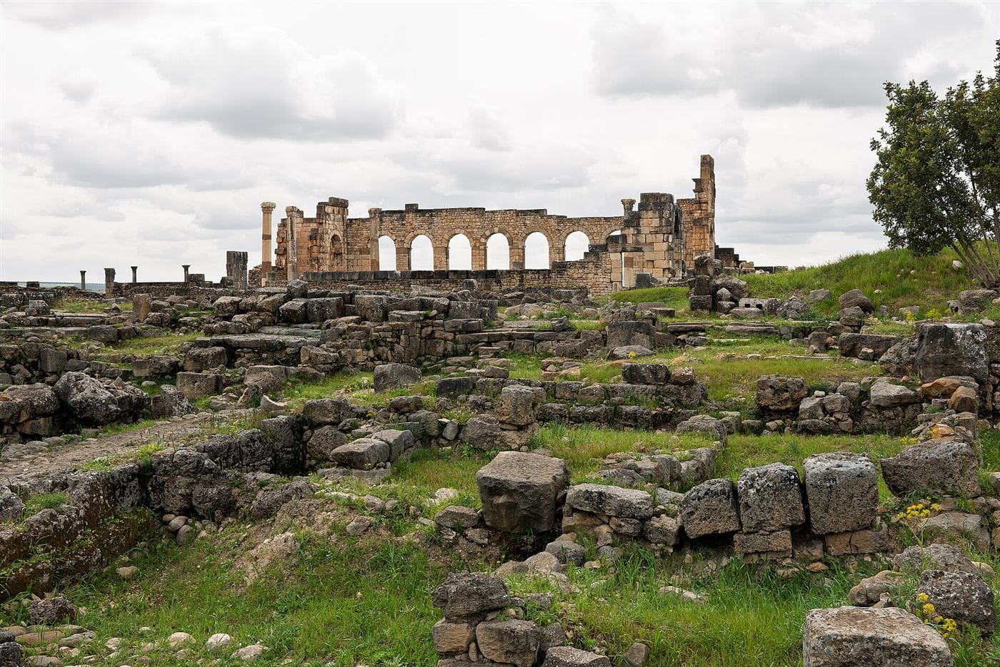
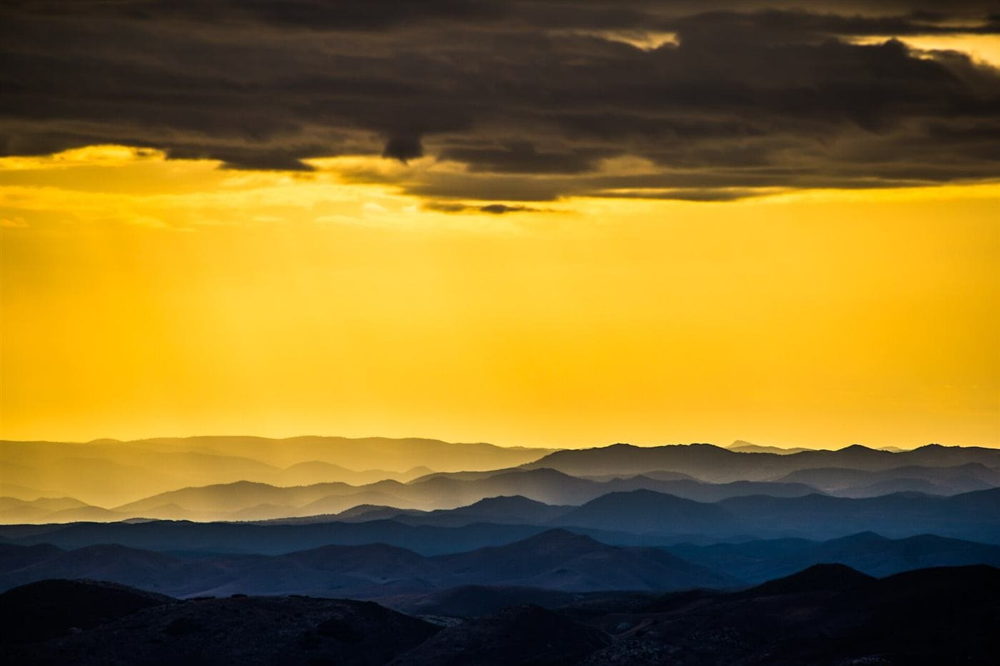

Shared group day trips from Marrakech & Fes
No private-tour price tag, no solo road-tripping logistics — just a shared minivan (or a local guide on foot), and a small group of fellow travelers, out and back the same day. Pick your city to see every route, from €15 per person.
Two cities, ten ways out
6 TripsDay Trips from Marrakech
A medina walking tour, the Atlas Mountains, the Agafay stone desert, Ouzoud Waterfalls, Essaouira, and the Ait Benhaddou kasbah route.
From €15 · See all 4 Trips
4 TripsDay Trips from Fes
The Blue City of Chefchaouen, Roman ruins at Volubilis, the Middle Atlas cedar forest, and the hidden-gem towns of Sefrou & Bhalil.
From €19 · See all10 memorable Morocco excursions, made easy
From quick Marrakech experiences to full-day escapes from Fes, these original small-group activities make it simple to see more of Morocco without arranging a private driver.
From €15Marrakech Medina Walking Tour
Discover Jemaa el-Fnaa, souks, Bahia Palace and hidden medina lanes with a local guide.
 From €29
From €29Ourika Valley & Atlas Mountains
Meet mountain communities, walk beside the river and enjoy the High Atlas foothills.
 From €35
From €35Agafay Desert Sunset Escape
Trade the city for a golden-hour camel ride and a Moroccan dinner beneath the Atlas horizon.
 From €35
From €35Ouzoud Waterfalls Day Trip
See Morocco's famous cascades, walk the olive groves and spot Barbary macaques near the falls.
 From €39
From €39Essaouira Atlantic Coast
Explore a breezy UNESCO-listed medina, fishing harbor, ramparts and Atlantic seafood.
 From €39
From €39Ait Benhaddou & Ouarzazate
Cross the High Atlas to a cinematic mud-brick kasbah and the gateway to the desert.
 From €39
From €39Chefchaouen Blue City
Wander the blue-washed Rif mountain medina, Kasbah Museum and Plaza Uta el-Hammam.

From €29Meknes, Volubilis & Moulay Idriss
Combine imperial gates, Roman mosaics and the hilltop holy town of Moulay Idriss.

From €29Ifrane & Middle Atlas Cedar Forest
See a different side of Morocco with alpine scenery, cedar forests and mountain villages.
 From €19
From €19Sefrou & Bhalil Hidden Villages
Slow down in two characterful Middle Atlas towns known for waterfalls, crafts and local life.
Flying in soon?
Skip the taxi-rank haggling — book a fixed-price shared or private airport transfer in Marrakech or Fes.